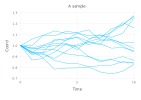

Constructors
InvariantStopping.Schedule — MethodSchedule(::LinRange)Constructor for Schedule. Creates a schedule representing a trajectory that stops at times given by the argument.
Examples
julia> schedule = Schedule(LinRange(0,10,11))
InvariantStopping.Schedule — MethodSchedule(::LinRange, ::Integer)Constructor for Schedule. Creates a schedule representing a tree of trajectories with a prescribed branching factor. Examples:
julia> schedule = Schedule(LinRange(0,10,11),2)
InvariantStopping.Sample — MethodSample(::State, ::Schedule, ::UnderlyingModel)Constructor for Sample. Starting from the initial State, it samples from the UnderlyingModel according to the Schedule.
Examples
julia> initial_state = State(0.0, 4.5)
julia> schedule = Schedule(LinRange(0,10,5))
julia> underlying_model = GeometricBrownianMotion() # Default parameters
julia> sample = Sample(initial_state, schedule, underlying_model)State Transition
InvariantStopping.forward_to — Functionforward_to(::State, ::Number, ::UnderlyingModel)Forwards a (State)(@ref) in time using the provided ()UnderlyingModel](@ref). Returns a (State)(@ref).
Examples
julia> initial_state = State(0.0,1.0)
julia> forward_time = 10.0
julia> underlying_model = GeometricBrownianMotion()
julia> forward_state = forward_to(initial_state, forward_time, underlying_model)
Plotting
InvariantStopping.plot — Functionplot(::Sample)Plot a sample with the x-axis representing time and the y-axis representing the first coordinate.
Examples:
state = State(0.0,(1.0,))
binary_tree = Schedule(LinRange(0,10,11),2)
underlying_model = GeometricBrownianMotion(0.01,0.05,0.0)
sample = Sample(state, tree, underlying_model)
plot(sample)
state = State(0.0,(1.0,))
star = Star(LinRange(0,10,11),12)
underlying_model = GeometricBrownianMotion(0.01,0.05,0.0)
sample = Sample(state, star, underlying_model)
plot(sample)
plot(::Sample, ::Integer)A helper function for recursively plotting trajectories.